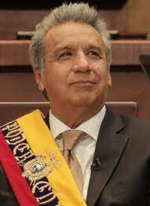

Lenín Moreno (1953- )
Lenín Moreno es un político ecuatoriano que ocupó la presidencia de Ecuador
desde 2017 hasta 2021. Nacido el 19 de marzo de 1953 en Nuevo Rocafuerte, Ecuador, Moreno
se convirtió en el primer presidente ecuatoriano en usar una silla de ruedas, lo que lo
llevó a enfocarse en la promoción de los derechos de las personas con discapacidad durante
su mandato. Durante su presidencia, se centró en políticas de inclusión social y desarrollo
económico sostenible.